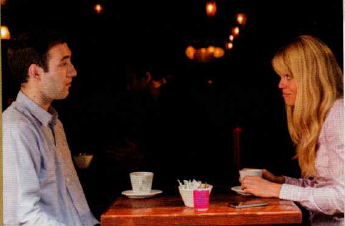
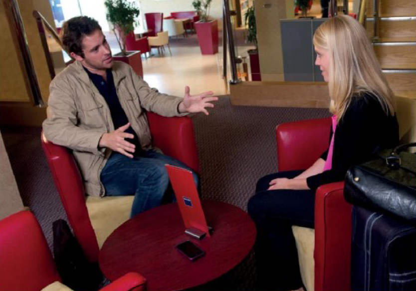
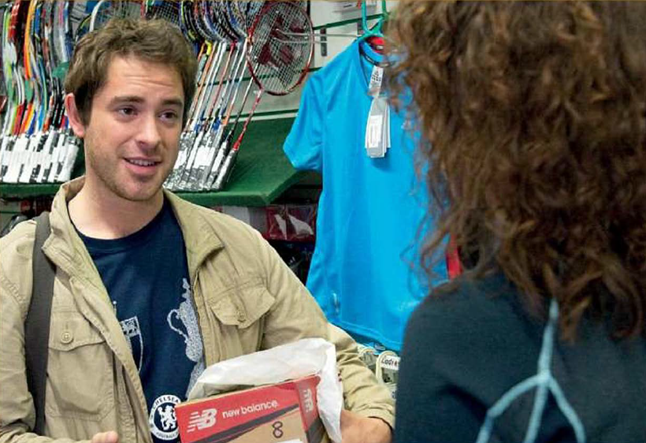

English File -4ed
1 - Beginner
--- Lesson: 1 Pg 11 ---
https://elt.oup.com/student/englishfile/beginner3/grammar/file01
1.42 - Rob
?? 1/ Rob is from ......... . the UK the USA 2/ He's ......... . an artist a journalist 3/ He's in Poland ......... . on holiday for work
Video: https://www.youtube.com/watch?v=Vo5txQMTfgY
Rob
R Hello. I’m Rob. I’m from London. I’m a journalist. Today I’m in Poland. I’m not on holiday. I’m here for work. °
1.43 - Checking into a hotel
Video: https://www.youtube.com/watch?v=Rl6-NzZM0fE
R = Rob, Re = receptionist
R Hello.
Re Good afternoon.
R My name’s Rob Walker. I have a reservation.
Re Sorry, what’s your surname?
R Walker.
Re How do you spell it?
R W-A-L-K-E-R.
Re Sorry?
R W-A-L-K-E-R.
Re Thank you. OK, Mr Walker. You’re in room three two one.
R Thanks.
°
1.44 - Repeat:
1.45 - Booking a table

??
1 Jenny's from ..... . the USA the UK
2 ... is her birthday. Today Tomorrow
3 Locanda Verde is a ..... . restaurant club
Video: https://www.youtube.com/watch?v=kUonBxDR9fk
Jenny
J Hi. I’m Jenny Zielinski. I’m from New York. Tomorrow’s my birthday, ... and my favourite restaurant in New York is Locanda Verde. It’s Italian.
°
1.46 - Booking a table 2
Complete the information:
Video: https://www.youtube.com/watch?v=z8xTfEHWbSI
W = waiter, J = Jenny
W Locanda Verde. Good morning. How can I help you?
J Hello. A table for tomorrow, please.
W Tomorrow…er, Tuesday?
J Yes, that’s right.
W How many people?
J Three.
W What time?
J Seven o’clock.
W What’s your name, please?
J Jenny Zielinski. That’s Z-I-E-L-I-N-S-K-I.
W Thank you, Ms, er, Zielinksi. OK. So, a table for three on Tuesday at seven.
J Great. Thanks. Bye.
W Goodbye. See you tomorrow.
°
1.47 - Phrases
I have a reservation. How do you spell it? Sorry? Thank you. Good morning. How can I help you? A table for tomorrow, please. That's right.
°
--- Lesson: 3 Pg 23 ---
https://elt.oup.com/student/englishfile/beginner3/grammar/file02
https://elt.oup.com/student/englishfile/beginner3/grammar/file03
3.23 - Buying lunch - Rob

Video: https://www.youtube.com/watch?v=80phWvm8r_0
B = barman, R = Rob
B Who’s next? R Can I have a cheese sandwich, please?
B Anything else? R And a Coke, please.
B Ice and lemon? R No, thanks.
:
B There you go.
R Thanks. How much is it? B Six pounds seventy-five.
R Here you are. B Thanks. Here’s your change.
°
3.24 - Repeat:
3.25 - Buying lunch
Video: https://www.youtube.com/watch?v=SyzYFw8ss8c
As = assistant, J = Jenny
As Hi. How can I help you?
J Hi. How much is this tuna salad?
As It’s seven twenty.
J OK, fine. And this mineral water, please.
As That’s nine dollars seventy cents. J Here you are.
As Thank you. Have a nice day.

A = Amy
A Jenny!
J Amy! Hi, how are you?
A I’m fine. How are you?
J I’m fine, too.
A What’s that?
J Oh, just a salad and some water.
A You are good! Look, wait for me. We can have lunch together in the park.
J Sure! Great idea.
A Can I have a cheese sandwich, a cappuccino, ... and a brownie, please?
°
3.26 - Phrases
Can I have a cheese sandwich, please? Anything else? And a Coke, please. Ice and lemon? No, thanks. How much is it? Here you are. Here's your change. I'm fine, too. Wait for me. Sure! Great idea.
°
--- Lesson: 5 Pg 34 ---
https://elt.oup.com/student/englishfile/beginner3/grammar/file04
https://elt.oup.com/student/englishfile/beginner3/grammar/file05
5.21 - Telling the time

Video: https://www.youtube.com/watch?v=l7frLcVXFv8
1) Rob - Alan
R I'm tired. What time is it?
A It’s eleven o’clock.
R I need to go. I have a meeting in Oxford tomorrow morning.
A One more drink?
R Oh, OK!
2) Woman
R Excuse me. What time is it?
W It’s a quarter to eight. What time’s your train?
R At seven forty-seven.
W You need to hurry! You only have two minutes.
R Thanks. Oh, no.
3) Man
R Hello. I’m Rob Walker. I’m sorry I’m late.
M You’re an hour late. It’s half past ten.
R I know. I’m really sorry.
°
5.22 - Repeat:
5.30 - A night out

Tick the two places they go to: a bar a café a theatre a cinema a restaurant
Complete sentences with times. 1 The show is at ..... . 2 Jenny and Amy meet at ..... . 3 The show ends at ..... .
Video: https://www.youtube.com/watch?v=VEo4kKlJIwI
A = Amy, J = Jenny
A Hi. Sorry I’m late. What time’s the show?
J Don’t worry. It’s at eight o’clock.
A What time is it now?
J It’s OK. It’s only twenty to eight.
:
A What a great show!
J Yes, fantastic. I’m hungry. Do you want a pizza?
A What time is it?
J Um, quarter to eleven.
A It’s late, and I’m tired.
J Oh, come on. I know a really good Italian restaurant near here.
A Oh, OK. Let’s go.
°
5.31 - Phrases
I need to go. You need to hurry. You're an hour late. I'm really sorry. Don't worry. What a great show! It's late and I'm tired. Come on. OK. Let's go.
°
--- Lesson: 7 Pg: 47 ---
https://elt.oup.com/student/englishfile/beginner3/grammar/file06
https://elt.oup.com/student/englishfile/beginner3/grammar/file07
7.27 - Saying the date

Video: https://www.youtube.com/watch?v=3THm3vME_To
Rob - Alan
R What's the date today?
A I think it's the ..... of June.
R Are you sure? Isn't it the ..... .
A No, definitely the ..... .
R Oh no! It's my dad's ..... .
Alan
R What’s the date today?
A I think it’s the 2nd of June.
R Are you sure? Isn’t it the 1st?
A No, definitely the 2nd.
R Oh no! It’s my dad’s birthday.
°
7.28 - Father's birthday
1 Where does Rob go? 2 What does he give his father? 3 When is his father's birthday?
Video: https://www.youtube.com/watch?v=tddnmRn0HZk
Rob - Dad
R Dad!
D Rob, hi!
R Hi. This is for you.
D For me? It’s my favourite wine. Thanks Rob! But why?
R For your birthday of course! Happy birthday!
D Rob, it isn’t my birthday today! My birthday’s on the 2nd of July. Today’s the 2nd of June.
R Oh no!
D Don’t worry. Come in! Have a glass of wine ...
°
7.30 - Talking on the phone
True of False ?
1 Rob thinks Jenny arrives in London on 20th March. 2 He thinks she leaves on the 29th. 3 It's Thanksgiving in the USA. 4 Jenny is with her friends. 5 Rob needs to call Jenny on Tuesday 1st December.
Video: https://www.youtube.com/watch?v=KCmqjLJORAU
Jenny - Rob
J Hello?
R Hello. Is that, uh, Jennifer Zielinski?
J Yes. Who’s that?
R This is Rob Walker.
J I’m sorry, who?
R Rob Walker. I work for London 24seven. We need to talk about your trip to London in March. Er, you arrive on the 12th of March ... and you leave on the 19th, is that right?
J I’m really sorry Mr. Walker ... er, Rob, ... but I’m not at work. Today is a holiday here.
R A holiday?
J Yes, you know, it’s Thanksgiving. I’m at my parent’s house, with my family.
R Thanksgiving. Of course. Sorry. We don’t have Thanksgiving in England.
J No problem. Listen, call me on Monday at work. No, not Monday, Tuesday.
R Tuesday the third of December?
J Yes.
~ Jenny! Hurry up!
J Talk to you on Tuesday. Thanks for calling.
R Bye.
J Bye.
°
7.31 - Phrases
What's the date today? Are you sure? Isn't it the 1st? It's my dad's birthday. This is for you. Happy Birthday! Is that Jennifer Zielinski? Yes. Who's that? We need to talk about your trip to London. Of course! Call me on Monday at work. Talk to you on Tuesday.
°
--- Lesson: 9 Pg: 58 ---
https://elt.oup.com/student/englishfile/beginner3/grammar/file08
https://elt.oup.com/student/englishfile/beginner3/grammar/file09
9.19 - Inviting and offering


Video: https://www.youtube.com/watch?v=xhlsleQ8Aeg
Rob - Alan
1/
R Hey, Alan. Would you like to come to the match with me on Sunday? It’s Norwich against Chelsea, and I have two tickets.
A Wow! What time’s the match?
R It’s at four o’clock.
A Yeah, I’d love to. Thanks.
R Would you like to meet for lunch first?
A Sorry, I can’t. It’s my mum’s birthday, and I need to have lunch with her. But I can meet you there.
R Great. Let’s meet at half past three at the entrance to the Tube station.
A Fine. See you there.
2/
A They are playing really badly. I hope the second half is better.
R Me, too. I know they can win. Would you like a burger?
A No, thanks. I’m not very hungry.
R How about a coffee?
A Yeah, great.
:
R Um, a burger and a water, please.
A And I’d like a coffee.
~ Milk and sugar?
A Yes, please.
:
Come on!
°
9.21 - Meeting an old friend

True or False ?
1 Jenny is looking well / tired. 2 It's raining / starting to rain in the street. 3 Jenny's meeting is in half an hour / an hour. 4 Jenny can / can't go to the exhibition. 5 Jenny thinks it is / isn't a good idea to meet Steve one evening.
Video: https://www.youtube.com/watch?v=x1OZ3DbNaQs
Steve - Jenny
S Hi, Jenny. What a surprise!
J Hi, Steve!
S How are you? You’re looking great.
J Thanks. I’m well. How about you?
S I’m OK. Hey, it’s starting to rain. Would you like a coffee?
J Oh, thanks, Steve, but I have a meeting in an hour.
S Oh, come on Jenny. I’d like to talk to you.
J OK. A quick coffee.
:
S Jenny, I’d like to ask you something.
J Yes?
S There’s an exhibition of Picasso at the MOMA next week. I know you love Picasso. Would you like to come with me?
J Listen, Steve. I’m really busy at work at the moment. Next week isn’t a good week for me.
S Sure. No problem. Maybe we can meet one evening, when you have more time and ... ... have dinner or see a show?
J Listen, Steve. I don’t think it’s a good idea. But thanks. Oh, look at the time! I need to go. Let’s ask for the check.
°
9.22 - Phrases
Would you like to come to the match with me? Yeah, I'd love to. Let's meet at half past three. See you there. Would you like a burger? How about a coffee? I'd like to ask you something. I don't think it's a good idea.
9.23
1/ A Would you like to come to a party at my house? B Yes, I'd love to. Thanks! When is it? A It's on Friday at 8.00. B Great! See you there.
2/ A Would you like to come to a party on Saturday? B Sorry, I can't. I'm busy on Saturday night.
°
--- Lesson: 11 Pg: 71 ---
https://elt.oup.com/student/englishfile/beginner3/grammar/file10
https://elt.oup.com/student/englishfile/beginner3/grammar/file11
https://elt.oup.com/student/englishfile/beginner3/grammar/file12
11.23 - Where's Jenny's hotel?
Asking for and giving directions

Video: https://www.youtube.com/watch?v=MPVNiugGLQI
J Hello?
R Hi, Jennifer?
J Yes.
R This is Rob Walker from London 24Seven. I’m phoning to check you got the email I sent you.
J Er, what was it about?
R It was the information about your hotel for next week.
J Just a second. Yes, here it is. Hotel Indigo, London Street. Where is it exactly?
R It’s very near Paddington Station. You can get the Heathrow Express train from the airport to the station. It only takes about 15 minutes.
J Ok. That's great. Can I walk to the hotel from the station?
R Yes, it’s very near. Can you see it on the map?
J Ah yes, I have it now.
R Turn left when you leave the station. Then go straight on for a bit and turn right into London Street. The hotel’s opposite Norfolk Square.
J Great.
R I can come to the hotel in the morning on your first day. We can walk to the office together.
J OK. See you then.
R Bye.
J Bye.
°
2 - Elementary
--- Lesson: 1 Pg 13 ---
https://elt.oup.com/student/englishfile/elementary3/grammar/file01
1.46 - Vocab: in a hotel
> 1 reception 6 the lift 2 a single room 4 a double roor 3 the bar 5 the ground floor
1.47 - Introduction
True of false ? 1 Rob lives and works in London. 2 He's a writer for a magazine. 3 The name of his magazine is London 20seven. 4 Jenny is British. 5 She's an assistant editor. 6 It's her second time in the UK.
Video: https://youtu.be/D2IBRE2B2pc?si=4vx_8gK92asUZq39&t=8
Rob Hi. My name’s Rob Walker. I live here in London, I work in London, ... and I write about London! I work for a magazine called London 24seven. I write about life in London – the people, the theatre, the restaurants…It’s fun! I love London. It’s a great city.
Jenny Hi. My name’s Jenny Zielinski. I’m from New York – the number one city in the world. I’m the assistant editor of a magazine, New York 24seven. I’m the new assistant editor. But this week, I’m on a business trip to London. This is my first time in the UK. It’s very exciting! °
1.48 - Checking in
> 1 Complete Jenny's surname: Z ... K . 2 What's her room number?
Test: https://elt.oup.com/student/englishfile/elementary3/phrasebank/ef_elem_practicaleng01
Video: https://youtu.be/6rdwmXo2Gio?si=TEFk-4hUCyZBO9oX&t=18
R = receptionist, J = Jenny
R Good evening, madam.
J Hello. I have a reservation. ~ My name’s Jennifer Zielinski. ~
R Can you spell that, please?
J Z-I-E-L-I-N-S-K-I. ~
R For five nights?
J Yes, that’s right. ~
R Can I have your passport, please?
J Just a second… ~ Here you are. ~
R Thank you. Can you sign here, please? Thank you. Here’s your key. It’s room three oh six, on the third floor. The lift is over there.
J The lift? Oh, the elevator. ~
R Yes. Enjoy your stay, Ms Zielinski.
J Thank you. ~
°
1.49 - Repeat ~
Video: https://youtu.be/EgjRph584Ec?si=5J34uC6tmwagdEPZ&t=4
1.50 - Phrases
Can you...? = Please do it. Can you spell that? Can you sign here?
Can I have...? = Please give me (my passport, etc.). Can I have my key, please? Can I have your passport, please?
1.51 - Jenny talks to Rob
Video: https://youtu.be/Z7rX4ylPtv4?si=Uoo2_PGQ3T56vrrK&t=16
W = waitress, J = Jenny, R = Rob
W Is your tea OK?
J Yes, thank you… It’s very quiet this evening.
W Yes, very relaxing! Are you on holiday?
J No , I’m here on business.
W Where are you from?
J I’m from New York. What about you?
W I’m from Budapest, in Hungary.
J Really? Oh, sorry.
W No problem.
-
J Hello?
R Is that Jennifer?
J Yes …
R This is Rob. Rob Walker…from London 24seven?
J Oh, Rob, yes, of course. Hi.
R Hi. How are you?
J Oh, I’m fine, thanks. A little tired, that’s all.
R I can meet you at the hotel tomorrow morning. Is nine OK for you?
J That’s perfect.
R Great. OK, see you tomorrow at nine.
J Thanks. See you then. Bye.
-
W Would you like another tea?
J No, thanks. It’s time for bed.
W Good night, and enjoy your stay.
J Good night.
°
1.52 - Would you like...?
We use Would you like...? to offer somebody something. We respond: Yes, please. or No, thanks.
> Would you like...? Would you like a coffee? Would you like another tea?
Yes, please. No, thanks. °
1.53 - Phrases
Video: https://youtu.be/N7JRlwXGNT4?si=9M6yQEi8g064Kb7k&t=9
> I'm here on business. I'm from New York. What about you? No problem. This is Rob. Rob Walker. That's perfect. It's time for bed.
°
--- Lesson: 3 Pg 29 ---
https://elt.oup.com/student/englishfile/elementary3/grammar/file02
https://elt.oup.com/student/englishfile/elementary3/grammar/file03
3.27 - Rob and Jenny meet
Why ... ? 1 ... is Rob late 2 ... doesn't Jenny like the hotel breakfast 3 ... is Jenny busy after 9.30 4 ... does Rob say 'Don't worry.'
Video: https://youtu.be/xZLkSYwJ9-A?si=Pd7DGID4fyLax13O&t=15
R = Rob, J = Jenny
R Erm…Jennifer?
J Rob?
R Yes, hello. Nice to meet you, Jennifer.
J Call me Jenny. Good to meet you, too.
R Welcome to London. Am I late?
J Erm…just a little.
R What time is it?
J Nine fifteen.
R I’m really sorry. The traffic is terrible today.
J No problem.
R How are you? How’s the hotel?
J The hotel’s very nice. But breakfast isn’t great. I’d like a good cup of coffee. Not hotel coffee – real coffee.
R OK, let’s get a coffee.
J Do I have time? I have a meeting at nine thirty.
R With Daniel?
J Yes.
R Don’t worry. We have lots of time – the office is very near. So, Jenny, where do you live in New York?
°
3.28 - Buying a coffee
?? 1 What kinds of coffee do Jenny and Rob have? 2 What do they have to eat? 3 How much is it?
Test: https://elt.oup.com/student/englishfile/elementary3/phrasebank/ef_elem_practicaleng02
Video: https://youtu.be/7HbqypjFBB8?si=ErHr7kDG1mktAQzs&t=15
B = barista, R = Rob, J = Jenny
B Can I help you?
R What would you like, Jenny? ~
J An espresso, please. ~
B Single or double?
J Double. ~
R Can I have a latte, please? ~
B Regular or large?
R Large. ~
B To have here or take away?
R To take away. ~
B Anything else?
J No, thanks. ~
R A brownie for me, please…and a croissant… ~
B OK.
R How much is that? ~
B That’s twelve forty-five, please.
R Sorry, how much? ~
B Twelve forty-five. Thank you. And your change.
R Thanks. ~
°
3.29 - Repeat
3.30 - First day in the office
?? 1 What's Karen's job? 2 Where in Europe does Jenny have family? 3 Where does she live in New York? 4 Does Karen have family in New York? 5 What does Daniel offer Jenny to drink? 6 What time is his next meeting?
Video: https://youtu.be/yOGLLnYFRGY?si=xMLkBAPfkqPfkzeY&t=26
R = Rob, J = Jenny, K = Karen, D = Daniel
R Here we are. This is the office. And this is Karen.
J Hello, Karen.
R Karen, this is Jennifer Zielinski from the New York office.
K Hello, Jennifer.
J Nice to meet you.
R Karen is our administrator. We all depend on her.
K Don’t listen to Rob.
R But it’s true!
K Is this your first time in the UK, Jennifer?
J Yes, it is. But it isn’t my first time in Europe. I have family in Poland.
K Really? And where do you live in New York?
J In Manhattan. Do you know New York?
K Yes. My sister lives in Brooklyn.
J I have family in Brooklyn, too. Where does your sister live?
D Jennifer!
J Daniel?
D How nice to meet you, at last. Would you like something to drink? Tea, coffee, water?
J Oh no, I’m fine, thanks.
D Great. Oh, Karen. What time is my next meeting?
K At twelve o’clock.
D That’s good – we have time. OK, come into my office, Jennifer.
J Thank you.
D Talk to you later, Rob.
R Yeah. Sure
°
3.31 - Phrases
> Here we are. Is this your first time in the UK? Would you like something to drink? Talk to you later.
--- Lesson: 5 Pg 44 ---
https://elt.oup.com/student/englishfile/elementary3/grammar/file04
https://elt.oup.com/student/englishfile/elementary3/grammar/file05
5.23 - Meeting in the street
Complete the sentences: 1 Rob has a ... for Jenny. 2 Jenny has another meeting with ... . 3 Rob has an interview in ... minutes. 4 Jenny's meeting is at ... past nine. 5 Rob needs to buy a new ... . 6 They go to a clothes ... . 7 Jenny needs to answer her ... .
Video: https://youtu.be/7Ygr_honGzI?si=E5SEGDR194_kds3c&t=10
R = Rob, J = Jenny
R Hey, Jenny!
J Oh, hi, Rob. Is that coffee for me?
R Yes. A double espresso.
J Oh wow, thanks. That’s really nice of you.
R No problem. Do you have a meeting with Daniel?
J Yes, another meeting. And you?
R I’m going to the office, too. I have an interview in twenty minutes.
J Oh really? With who?
R A theatre director.
J Sounds interesting.
R What time is your meeting with Daniel?
J At half past nine.
R Ugh!
J Oh no. Are you OK? I’m so sorry!
R I’m fine!
J I’m really sorry. You can’t do an interview in that shirt.
R Don’t worry, there’s a clothes shop over there. I can buy a new one.
J OK. I can help you choose one. Oh, that’s my phone. Sorry, I need to answer this. See you in there.
R OK
°
5.24 - Phrases Apologizing
Apologizing: I'm sorry. That's OK. I'm so sorry. Don't worry. I'm really sorry. No problem.
5.25 - Buying clothes
?? 1 What size does Rob want? 2 Does he try it on? 3 How much is the shirt?
Test: https://elt.oup.com/student/englishfile/elementary3/phrasebank/ef_elem_practicaleng03
Video: https://youtu.be/XUBgIKG0fMY?si=nbJUoxe7NgIt5H3u&t=13
S = shop assistant, R = Rob
S Can I help you?
R Yes, what size is this shirt? ~
S Let’s see. It’s a small. What size do you need?
R A medium. ~
S This is a medium.
R Thanks. ~ Where can I try it on? ~
S The changing rooms are over there.
R Thank you. ~
-
S How is it?
R It’s fine. ~ How much is it? ~
S It’s forty-four pounds ninety-nine.
°
5.26 - Repeat
5.27 - Jenny's on the phone
True or false ? 1 Jenny is talking to Eddie. 2 She says she doesn't like London. 3 She says she likes the people in the office. 4 Jenny is standing outside the shop. 5 Eddie thinks that Rob is her boss. 6 Jenny loves Rob's new shirt.
Video: https://youtu.be/6XSwXWVrzGA?si=auGEArNtNq360MxV&t=7
E = Eddie, J = Jenny, R = Rob
E So, Jenny, what do you think of London?
J I love it, Eddie! It’s so cool!
E What about the people in the office?
J They’re really nice. And they’re very polite!
E What are you doing right now? You aren’t in the office. I can hear traffic.
J Right now? I am standing outside a men’s clothing store.
E You’re what?
J I’m waiting for Rob…
E Who’s Rob? Do you have a new boyfriend already?
J Don’t be silly. He’s just a guy from the office. He’s buying a new shirt.
E Wait a minute. So you’re waiting for a guy named Rob outside a men’s clothing store…?
J Stop it. I don’t have time to explain it all now. Oh, here he is now. I have to go.
E OK. Have fun!
J Bye Eddie. Love you.
R So, what do you think?
J You cannot be serious!
R What’s wrong? You don’t like my new shirt?
J No way! You can’t wear that to an interview! Come on, let’s go back into the store and change it.
R OK.
°
5.28 - Phrases
> 1 It's so cool! 2 Right now? 3 Wait a minute. 4 I have to go. 5 Have fun! 6 What's wrong? 7 No way!
--- Lesson: 7 Pg: 61 ---
https://elt.oup.com/student/englishfile/elementary3/grammar/file06
https://elt.oup.com/student/englishfile/elementary3/grammar/file07
7.19 - A free morning
Complete the sentences: 1 Rob suggests that they go ..... . 2 He says that they can ..... bikes. 3 ..... phones ..... . 4 Rob needs to interview an ..... . 5 Rob asks if he can do the interview on ..... . 6 Rob and Jenny arrange to meet at o'clock outside the Tate Modern.
Video: https://youtu.be/d9TxAJaoVHs?si=yOQCsA66613woshU&t=16
R = Rob, J = Jenny, D = Daniel
R So, Jenny, we have a free morning. What do you want to do?
J Well, you’re the expert on London life! What do you suggest?
R Well, we can go cycling.
J I don’t have a bike.
R We can rent bikes. It’s easy.
J That’s cool.
R OK, great. So we can cycle through the parks, and you can see a bit of London. Oh, hang on. Uh oh. It’s Daniel.
-
R Daniel, hi!
D Hi, Rob. You need to do an interview this morning with an artist. He’s at the Tate Modern. *1
R Can I do the interview on Monday?
D Sorry, he can only do this morning.
R OK, send me the details.
D Thank you very much, Rob.
R I’m sorry.
J That’s OK, I understand. Work is work!
R But I can meet you later, outside the Tate Modern. It’s on the South Bank.
J I can find it. I have a map, I can cycle there.
R Let’s meet at twelve o’clock then.
J Great.
°
*1/ (the) Tate Modern ... a famous art gallery in London
7.20 - Vocab: directions
Directions: 3 on the corner 1 at the traffic lights 5 a bridge 7 opposite 2 turn left 4 turn right 9 go straight on 6 go past the church 8 at the end of the street
7.21 - Asking the way
Jenny is trying to find the Tate Modern. Is it A, B, C, or D? How many people does she ask?
Test: https://elt.oup.com/student/englishfile/elementary3/phrasebank/ef_elem_practicaleng04
Video: https://youtu.be/hQ8G_uh2fkk?si=rmQ18i7jdfBXU_qf&t=30
J = Jenny, P = passer-by
J Excuse me, please. ~ Where’s the Tate Modern? ~
P1 Sorry, I don’t live here.
-
J Excuse me. Is the Tate Modern near here? ~
P2 The Tate Modern? It’s near here, but I don’t know exactly where. Sorry.
J Thank you. ~
-
J Excuse me. Can you tell me the way to the Tate Modern, please? ~
P3 Yes, of course. Go straight on. Go past the church, then turn left at the traffic lights. And it’s at the end of the street.
J Sorry, could you say that again, please? ~
P3 Yes, go straight on. Go past the church, and then turn left at the traffic lights. And it’s at the end of the street. You can’t miss it!
J Thank you. ~
°
7.22 - Repeat:
7.23 - Jenny and Rob go sightseeing
?? 1 The Millennium / London Bridge is only for people. 2 It was the first new bridge over the Thames in 100 / 200 years. 3 Jenny doesn't like the theatre / Shakespeare. 4 Jenny can / can't meet Daniel for lunch. 5 There's a great gift shop / restaurant on the top floor of the Tate Modern. 6 The Tate Modern was a power/ train station until 1981.
Video: https://youtu.be/_7xT10TewnM?si=z6KCumvjuDyvhFad&t=14
R = Rob, J = Jenny, D = Daniel
R Sorry about the weather.
J Yeah… but what a view! It’s a great bridge, too.
R It’s the Millennium Bridge. It’s not for cars, only for people. It was the first new bridge over the Thames in one hundred years.
J You sound like a tour guide!
R Sorry… I interviewed the architect last year. So what would you like to visit?
J What is there to see?
R Well, we could see the Tate Modern first as we’re here, ... and then we could go to the Globe Theatre. Do you like Shakespeare?
J Not really. I studied too much Shakespeare in college.
-
J It’s Daniel. Sorry. Hi, Daniel.
D Hi, Jennifer. How’s your free day? Are you enjoying London?
J Absolutely. It’s fantastic.
D Listen, I have some free time today. Would you like to meet for lunch?
J That’s really nice of you, Daniel, but I’m sorry, I can’t. I’m really far away from the office right now.
D That’s OK. No problem. Maybe another time?
J Definitely. Bye.
R What did he want? Anything important?
J Not at all. Hey, let’s go inside the Tate Modern now.
R Yes, of course. There’s a great restaurant on the top floor. The view is fantastic. The Tate Modern was a power station until 1981. Did you know that?
J I didn’t. Do you know anything else about the Tate Modern?
R Thank you for asking, I know a lot about it actually...
J Oh, great!
°
7.24 - Phrases
Repeat: 1 What a view! 2 What would you like to visit? 3 What is there to see? 4 We could go to the Globe Theatre. 5 Would you like to meet for lunch? 6 That's really nice of you. 7 Maybe another time? 8 Yes, of course.
--- Lesson: 9 Pg: 76 ---
https://elt.oup.com/student/englishfile/elementary3/grammar/file08
https://elt.oup.com/student/englishfile/elementary3/grammar/file09
9.21 - An invitation to dinner
True or false ? 1 Jenny and Rob worked last night. 2 Jenny wants to read Rob's article. 3 It's Eddie's birthday today. 4 Rob and Daniel invite Jenny to dinner. 5 Jenny says yes to Rob.
Video: https://youtu.be/ioOAUMWSZN8?si=xIe9z_4j6rMOgk0F&t=9
R = Rob, J = Jenny, E = Eddie, D = Daniel
J Thanks for showing me around London yesterday. I had a great time.
R Me too. So, what did you do last night?
J Nothing, really. I had a lot of work to do. Emails, phone calls… What did you do?
R I wrote my article about the artist that I interviewed yesterday morning.
J Can I see it?
R Sure, it’s on my laptop. Hang on a second. There.
J Oh, sorry. Hi, Eddie.
E Happy Birthday to you! Happy Birthday to you!
J Thanks! But listen, I can’t talk right now. I’m in the office.
E OK.
J Yeah, later.
E Have fun!
J OK. Sorry, but…it’s my birthday today.
R Really? Happy Birthday! Maybe we could have dinner tonight?
-
D Jennifer.
J Oh, hi, Daniel.
D I’d like to take you out for dinner this evening.
J This evening?
D Yes, for a working dinner. We have a lot to talk about before you go back to New York. I know a very good restaurant.
J Yes, of course.
D Great. See you later.
J Yes, sure. Sorry, Rob.
°
9.22 - Phrases
>
A It's my birthday today.
B Happy Birthday!
-
A We won the cup!
B Congratulations!
-
A I have my driving test tomorrow.
B Good luck!
-
A I got all my English homework right.
B Well done!
-
A I didn't pass my exam.
B Oh dear! Never mind.
9.23 - Respond
>
A I got two goals this afternoon.
B Well done!
-
A I passed my exams. I’m a doctor!
B Congratulations!
-
A I’m thirty today.
B Happy Birthday!
-
A I didn’t pass my driving test.
B Oh dear! Never mind.
-
A I have my English exam tomorrow.
B Good luck!
9.25 - Ordering a meal
Test: https://elt.oup.com/student/englishfile/elementary3/phrasebank/ef_elem_practicaleng05
Video: https://youtu.be/bKCAdcLlqiM?si=3DuD30X9fpQZO1e9&t=9
W = waiter, D = Daniel, J = Jenny
W Good evening. Do you have a reservation?
D Yes, a table for two. ~ My name’s Daniel O’Connor. ~
W Come this way, please.
-
W Are you ready to order?
J Yes. The soup and the mushroom ravioli, please. ~
D I’d like the mozzarella salad and then the chicken, please. ~
W What would you like to drink?
J Just water for me. ~
D A bottle of mineral water, please. ~
W Still or sparkling?
D Is sparkling OK? ~
J Yes, sparkling. ~
W Thank you, sir.
D Thank you. ~
°
9.26 - Repeat:
9.27 - The end of the meal
?? 1 How does Jenny normally celebrate her birthday? 2 Do they order dessert or coffee? 3 What does Daniel say to Jenny after the meal? 4 How does Jenny answer? 5 Does Barbara give Jenny good news or bad news? 6 Where does Jenny want to go after the meal?
Video: https://youtu.be/k44LR0qb4K0?si=fcZlGkJBxWuUJiHe&t=8
D = Daniel, J = Jenny, W = waiter, B = Barbara
D So, Jenny, I hear it’s your birthday today.
J Yes, that’s right.
D Well, Happy Birthday! How do you normally celebrate?
J Oh, nothing special. Maybe I go out for dinner with friends or see a movie.
D Well, we could go out somewhere, after dinner.
W Would you like a dessert?
J Not for me, thanks.
D OK, no.
W Coffee?
J A decaf espresso.
D The same for me, please.
W Two decaffeinated espressos. Certainly, sir.
D You know, Jenny, you’ve got beautiful eyes.
J I get them from my mother. Anyway, what are your plans for the July edition of the magazine?
D The, er, July edition? I, um…
J I have to take this. Sorry.
D No problem.
-
J Hi, Barbara.
B Jenny, just a quick call. We really like your idea about Rob Walker. He’s a great writer.
J So can I ask him?
B Yes. Go ahead.
J That’s great.
B Good luck. I hope he says yes.
J Me too.
-
D Good news?
J Yeah. That was Barbara, my boss from the New York office. She just gave me a little birthday present.
D So, would you like to go somewhere else?
J I’m sorry, Daniel. I’m a little tired.
D Yes. Of course. Waiter, could I have the bill, please?
°
9.28 - Phrases
> 1 Nothing special. 2 Would you like a dessert? 3 Not for me, thanks. 4 A decaf espresso. 5 The same for me, please. 6 Go ahead. 7 Good news? 8 Could I have the bill, please?
--- Lesson: 11 Pg: 93 ---
https://elt.oup.com/student/englishfile/elementary3/grammar/file10
https://elt.oup.com/student/englishfile/elementary3/grammar/file11
https://elt.oup.com/student/englishfile/elementary3/grammar/file12
11.14 - Jenny's last morning

True or false: 1 Rob arrives late. 2 He has a coffee with Jenny. 3 Jenny has bad news for him. 4 Rob thinks "A writer in New York" is a good name for a column. 5 Rob needs time to think.
Video: https://youtu.be/Lbn9FsMmmX8?si=7r1rcWMgXjLOpH8Q&t=10
R = Rob, J = Jenny
J Rob!
R Jenny, hi. Sorry I’m a bit late.
J No problem.
R Really?
J Really!
R I got your message.
J Would you like a coffee or something?
R No, I’m fine, thanks. So what did you want to talk about? You think London is the best city in the world and you don’t want to go home.
J Not exactly. We’d like you to come to New York.
R Me? To New York?
J I talked to Barbara about you. You know, Barbara, my boss? She loves your articles, too. So…would you like to come over to New York and work for us? Just for a month. And write a column for New York 24seven. And maybe a daily blog?
R Wow, sounds great! What could I call it? An Englishman in New York?
J Why not? Are you interested?
R Yes, very. It’s amazing! But I need to think about it.
J Of course.
R When do I need to decide?
J Before the end of the week.
R OK, great. Thank you.
J And now, I really have to go.
°
11.15 - Vocab: public transport
> 3 bus 2 plane 6 taxi 1 train 5 coach 4 tram
11.16 - Getting to the airport
Test: https://elt.oup.com/student/englishfile/elementary3/phrasebank/ef_elem_practicaleng06
Video: https://youtu.be/I3xtCKp9Ap8?si=yIi4yOOVVQxLypcI&t=8
J = Jenny, R = receptionist, T = taxi driver, TC = ticket clerk
J Could you call me a taxi, please? ~
R Yes, of course. Where to?
J To Paddington Station. ~
R And when would you like it for?
J Now, please. ~
-
J How much is it? ~
T That’s thirteen sixty, please.
J Make it fifteen pounds. ~ And could I have a receipt? ~
T Thank you very much, madam.
-
J Could I have a ticket to Heathrow Airport, please? ~
TC Single or return?
J Single, please. ~
TC Standard or first class?
J Standard, please. ~
T That’s eighteen pounds.
J Can I pay by credit card? ~
TC Yes, of course.
°
11.17 - Repeat
11.18 - Saying goodbye
?? 1 Jenny is worried because... 2 Rob goes to the airport because.. 3 Rob tells Jenny that he wants to... 4 Eddie isn't going to meet Jenny in New York because... 5 Rob is pleased because Eddie is... 6 Jenny needs to go because...
Video: https://youtu.be/FUJpIJ-hWyU?si=nAbaovVEuc8og_Yn&t=18
J = Jenny, R = Rob, A = announcement
J Where is it? Where’s my phone?!
R Are you looking for this?
J Rob! I can’t believe it! My phone! You’re a hero, thank you so much.
R No problem. It gave me a chance to see you again. And I had more time to think about your offer.
J And?
R I’d love to accept. I really want to come and work in New York.
J That’s great, Rob! I’m so happy.
R Me, too. Oh, you had a call from Eddie. I didn’t answer it. Is he going to meet you at the airport?
J Eddie? No. He’s at college in California.
R In California? Does he teach there?
J Teach? No, he’s a student.
R A student?
J Well, he’s only nineteen. Eddie’s my brother.
A Next departure, flight 232 to New York, is now ready for boarding.
J I need to go.
R Well, have a good journey.
J Thanks, Rob. Bye.
R Bye. And see you in New York!
°
A:
1 Jenny is worried because ...
... she can’t find her phone.
-
2 Rob goes to the airport because ...
... he wants to give Jenny her phone.
-
3 Rob tells Jenny that he wants to ...
... come and work in New York.
-
4 Eddie isn't going to meet Jenny in New York because ...
... he lives in California.
-
5 Rob is pleased because Eddie is ...
... Jenny’s younger brother.
-
6 Jenny needs to go because ...
... she needs to get her plane.
11.19 - Phrases
> I can't believe it! Thank you so much. I'm so happy. Have a good journey. See you in New York!
3 - Pre-intermediate
--- Lesson: 1 Pg 12 ---
https://elt.oup.com/student/englishfile/preint3/grammar/file01
1.30 - Introduction
1 What does Jenny do? 2 Where did she go a few months ago? 3 Who's Rob Walker? 4 What did they do together? 5 What does she think of Rob? 6 What's Rob's one negative quality? 7 How long is Rob going to be in New York?
Video: https://youtu.be/Ihxt9Gybmn4?si=CZvFwvsJuEGFvgQP
Jenny: My name’s Jenny Zielinski. I live and work in New York. I’m the assistant editor of a magazine called NewYork 24seven. A few months ago, I visited our office in London to learn more about the company. I met the manager, Daniel O’Connor. I had lots of meetings with him, of course. And a working dinner on my birthday… But I spent more time with Rob Walker. He’s one of the writers on the London magazine. We had coffees together. We went sightseeing. I even helped Rob buy a shirt! He was fun to be with. I liked him a lot. I think he liked me too. Rob isn’t the most punctual person in the world, but he is a great writer. We invited him to work for the New York magazine for a month … and he agreed! So now Rob’s coming to New York. I know he’s really excited about it. It’s going to be great to see him again.
°
Answers:
1 She works for a magazine. / She is the assistant editor of a magazine. 2 She went to London. 3 Rob is one of the writers for the magazine. 4 They had coffee and went sightseeing and shopping. 5 She likes him a lot. He was fun. 6 He isn’t very punctual. / He’s always late. 7 He is going to be in New York for a month.
1.31 - Calling reception
Who does Rob call? Why?
Video: https://youtu.be/rcMzzVXFIsA?si=aZpPtsPuD_Gja-0o&t=9
Re = receptionist, R = Rob
Re Hello, reception.
R Hello. This is room six-one-three. ~
Re How can I help you?
R There’s a problem with the air conditioning. ~ It isn’t working, and it’s very hot in my room. ~
Re I’m sorry, sir. I’ll send somebody up to look at it right now.
R Thank you. (repeat) ~
:
Re Good evening, reception.
R Hello. I’m sorry to bother you again. ~ This is room six-one-three. ~
Re How can I help you?
R I have a problem with the wi-fi. ~ I can’t get a signal. ~
Re I’m sorry, sir. I’ll put you through to IT.
R Thanks. (repeat) ~
°
1.32 - Repeat:
A: There's a problem with the air conditioning. B: I'll send somebody to look at it.
I'll = I will. We use I'll + verb to offer to do something.
1.33 - Jenny and Rob Meet again
That evening Jenny goes to the hotel to meet Rob and they go out for a drink.
True of false?
1 Rob says he doesn't like the hotel. 2 Jenny is going to show him round the city tomorrow. 3 Barbara is Jenny's boss. 4 Rob is hungry. 5 It's four in the morning for Rob. 6 They're going to meet at eleven. 7 Jenny thinks that Rob is going to get lost.
Video: https://youtu.be/sZNDwFONy30?si=pshmj537XcNTDAj4&t=16
J = Jenny, R = Rob
J So, here you are in New York at last.
R Yeah, it’s great to be here. It’s really exciting.
J And how’s your hotel?
R It’s fine. My room is really…nice.
J Do you have a good view from your room?
R I can see lots of other buildings.
J Tomorrow, I’m going to show you around the office and introduce you to the team. Barbara’s looking forward to meeting you … ... You remember Barbara, my boss?
R Oh…yeah, sorry.
J And then you can start thinking about your blog and the column. Have you got any ideas yet, Rob? …Rob?
R What? Sorry, Jenny.
J You must be really tired.
R Yes, I am a bit. What time is it now?
J It’s nine o’clock.
R Nine o’clock? That’s two o’clock in the morning for me.
J Let’s finish our drinks. You need to go to bed.
R I guess you’re right.
J So, I’ll see you in the office at eleven in the morning.
R At eleven?
J Is that OK?
R It’s perfect. Thanks, Jenny.
J There’s just one thing.
R What’s that?
J Don’t be late.
R By the way, it’s great to see you again.
J Yeah. It’s great to see you, too.
°
1.34 - Phrases
1.R It's ... to be here. 2. J Do you have a ... view? 3. J You ... be really tired. 4.R I guess you're ... . 5.R By the ... ... 6. J It's great to see you, ... .
--- Lesson: 3 Pg 28 ---
https://elt.oup.com/student/englishfile/preint3/grammar/file02
https://elt.oup.com/student/englishfile/preint3/grammar/file03
3.20 - In the New York office

True or false? 1 The New York office is smaller than the London office. 2 Barbara is the editor of the magazine. 3 Rob has never been to New York before. 4 Barbara is going to have lunch with Rob and Jenny. 5 Holly is going to work with Rob. 6 Holly wants to go to the restaurant because she's hungry.
Video: https://youtu.be/LiL-F77gib0?si=71uqzGfNTShwRZMs&t=18
J = Jenny, R = Rob, B = Barbara, H = Holly
J Well, I think that’s everything. What do you think of the office?
R It’s brilliant, and much bigger than our place in London.
J Oh, here’s Barbara. Rob, this is Barbara, the editor of the magazine.
B It’s good to finally meet you, Rob.
R It’s great to be here.
B Is this your first time in New York?
R No, I came here when I was eighteen. But only for a few days.
B Well, I hope you get to know New York much better this time!
J Barbara, I’m going to take Rob out for lunch. Would you like to come with us?
B I’d love to, but unfortunately I have a meeting at one. So, I’ll see you later. We’re meeting at three, I think.
J That’s right.
B Have a nice lunch.
:
H Hey, are you Rob Walker?
R Yes.
H Hi, I’m Holly. Holly Tyler.
R Hello, Holly.
H We’re going to be working together.
J Really?
H Didn’t Barbara tell you? I’m going to be Rob’s photographer!
J Oh, well … We’re just going for lunch.
H Cool! I can come with you. I mean, I had a sandwich earlier, so I don’t need to eat, ... but Rob and I can talk. Is that OK?
J Sure.
H So, let’s go.
°
3.21 - Vocab: Restaurants
What do you call ... ? 1/ the book or list which tells you what food there is 2/ the three parts of a meal 3/ the person who serves you 4/ the piece of paper with the price of the meal 5/ extra money you leave if you are happy with your meal or with the service
What do you say ... ? 6/ if you want a table for four people 7/ when the waiter asks you what you want 8/ when you are ready to pay
3.22 - At the restaurant
1 What do Jenny, Rob, and Holly order? 2 What problems do they have?
Video: https://youtu.be/t3DXMHWTX_U?si=48Z9KR64JPelTbsr&t=22
W = waitress, J = Jenny, R = Rob, H = Holly
W Are you ready to order?
J Yes, please. ~
W Can I get you something to start with?
J No, thank you. ~ I’d like the tuna with a green salad. ~
W And for you, sir?
R I’ll have the steak, please. ~
W Would you like that with fries or a baked potato?
R Fries, please. ~
W How would you like your steak? Rare, medium, or well done?
R Well done. ~
H Nothing for me. ~
W OK. And to drink?
J Water, please. ~
W Still or sparkling?
J Sparkling. ~
:
W The tuna for you, ma’am, and the steak for you, sir.
J I’m sorry, but I asked for a green salad, not fries. ~
W No problem. I’ll change it.
R Excuse me. ~
W Yes, sir?
R Sorry, I asked for my steak well done, and this is rare. ~
W I’m really sorry. I’ll take it back to the kitchen.
°
3.23 - Repeat:
Listen again and complete the "You hear" phrases:
3.24 - Holly and Rob make friends
Q: 1 What's Rob going to write about? 2 How does Holly offer to help him with interviews? 3 What does she say they could do one evening? 4 What's the problem with the check? 5 Why does Jenny say it's time to go? 6 Do you think Jenny wanted Holly to come to lunch?
Video: https://youtu.be/XGtLH0azMg0?si=7z4Ai2W_kDtrDljs&t=18
H = Holly, R = Rob, J = Jenny, W = waitress
H So tell me, Rob, what are you going to write about?
R Well, to start with, my first impressions of New York. You know, the nightlife, the music, things like that.
H Are you planning to do any interviews?
R I’d like to. Do you have any suggestions?
H Well, I know some great musicians.
R Musicians?
H You know, guys in bands. And I also have some contacts in the theatre and dance.
R That would be great.
H Maybe we could go to a show, and after you could talk to the actors.
R I really like that idea.
W Can I bring you anything else?
J Could we have the check, please?
W Yes, ma’am.
:
W Here’s your check.
J Thanks.
:
J Excuse me. I think there’s a mistake. We had two bottles of water, not three.
W You’re right. I’m really sorry. It’s not my day today! I’ll get you a new check.
J Thank you.
H We’re going to have a fun month, Rob.
R Yeah, I think it’s going to be fantastic.
J OK, time to go. You have your meeting … with Barbara at three.
R Oh yeah, right.
°
3.25 - Phrases
Holly, Rob, Jenny 1.H ... tell me, ... 2.R Well, to ... with... 3.R Do you have any ... ? 4.R That would ... great. 5.J ... we have the check (bill), please? 6.J Excuse me, I think there's a ... . 7.J OK, ... to go.
--- Lesson: 5 Pg 44 ---
https://elt.oup.com/student/englishfile/preint3/grammar/file04
https://elt.oup.com/student/englishfile/preint3/grammar/file05
5.21 - Rob has a problem
1 What reason does Rob give for why he isn't in shape? 2 Why does he find it difficult to eat less? 3 How does he keep fit in London? 4 Why doesn't he do the same in New York? 5 How does Jenny keep fit? 6 What does Holly think about this? 7 What does Holly suggest that Rob could do? 8 What does Rob need to do first?
Video: https://youtu.be/kmOQpvsLsFo?si=SDzOaqPoHDu9hRfz&t=23
H = Holly, R = Rob
H Hey, Rob, come on. Keep up.
R Sorry. I’m a bit tired this morning.
H You aren’t exactly in good shape, are you?
R I know, I know. I think I’m eating too much.
H Then eat less!
R It isn’t easy. I eat out all the time. And the portions in American restaurants are enormous.
H You don’t do enough exercise.
R I walk a lot.
H Walking isn’t enough, Rob. Do you do anything to keep fit?
R I cycle when I’m in London...
H So why don’t you get a bike here?
R I’m only here for another three weeks. Anyway, my hotel’s near the office. I don’t need a bike.
H You know, Jennifer goes running all the time. Before and after work. But I just think that running is so boring. I mean, where’s the fun?
R Yeah, I’m not very keen on running.
H So why don’t you play basketball with me and my friends?
R OK. That’s a great idea! But I don’t have any trainers.
H Trainers? Sneakers! You can buy some.
R Is there a sports shop near here?
H Sure, there’s one across the street.
°
5.22 - Making suggestions with: "Why don't you...?"
Why don't you get a bike? That's a good idea, but I'm only here for a month.
Why don't you come and play basketball? That's a great idea!
5.23 - Vocab: shopping
1/ What four letters do you often see in clothes which tell you the size? 2/ What do the letters in the clothes mean? 3/ What’s the name of the room where you can try on clothes? 4/ What’s the name of the piece of paper a shop assistant gives you when you buy something? 5/ How do you say these prices? £25.99 75p $45 15c €12.50
5.24 - Taking something back to a shop

1 What's the problem with Rob's trainers? 2 What does he do in the end?
Video: https://youtu.be/cRrW_8kLKJY?si=4U-SRjVKRKW4RmqC&t=23
S = shop assistant, R = Rob
S Can I help you, sir?
R Yes. Do you have these in an eight? ~
S Just a minute. I’ll go and check.
:
S Here you are, these are an eight. Do you want to try them on?
R No, thanks. I’m sure they’ll be fine. ~ How much are they? ~
S They’re $83.94.
R Oh, it says $72.99. ~
S Yes, but there’s an added sales tax of fifteen per cent.
R Oh, OK. Do you take Mastercard? ~
S Sure.
:
S Can I help you?
R Yes, I bought these about half an hour ago. ~
S Yes, I remember. Is there a problem?
R Yes, I’m afraid they’re too small. ~
S What size are they?
R They’re an eight. ~ But I take a UK eight. ~
S Oh, right. Yes, a UK eight is a US nine.
R Do you have a pair? ~
S I’ll go and check. Just a minute.
:
S I’m sorry, but we don’t have these in a nine. But we do have these, and they’re the same price. Or you can have a refund.
R Erm…I’ll take this pair, then, please. ~
S No problem. Do you have the receipt?
R Yes, here you are. ~
S Brilliant.
°
5.25 - Repeat:
5.26 - Rob decides to do some exercise
1 Rob went to Boston / Brooklyn. 2 He shows / doesn't show Jenny his new trainers. 3 Jenny goes running every morning / evening in Central Park. 4 She wants to go running with him at 6.45 / 7.45. 5 Rob thinks it's too early / late. 6 They agree to meet at 6.45 / 7.15. 7 Holly thinks Rob has / doesn't have a lot of energy.
Video: https://youtu.be/JgWZ5z8kcWE?si=qDzedwD8pnxyeXqK&t=16
R = Rob, J = Jenny
R Hi, Jenny.
J Oh, hi.
R Have you had a good day?
J Oh, you know. Meetings! What about you?
R It was great. I went to Brooklyn and met some really interesting people.
J And you had time to go shopping, too.
R What? Oh yeah. I’ve just bought these.
J What are they?
R A pair of trainers – er, sneakers.
J Nice. Why did you buy sneakers?
R I think I need to get a bit fitter.
J Oh, I’m impressed. You know, I go running every morning in Central Park.
R Do you?
J It’s so beautiful early in the morning. Why don’t you come with me?
R Er…sure. Why not?
J Great! I’ll come by your hotel tomorrow morning.
R OK. What time?
J Six forty-five?
R Six…?
J Forty-five.
R Can we make it a bit later? Say, seven forty-five?
J That’s too late, Rob. Let’s make it seven fifteen.
R OK.
J Excellent. See you later.
R Great.
H Basketball and running, Rob? You must have a lot of energy.
R Er…yeah.
°
5.27 - Phrases
1.R Have you ... a good day? 2.J Oh, you ... . Meetings! 3.J Why ... you come with me? 4.R Can we ... it a bit later? 5.J ... make it seven fifteen.
--- Lesson: 7 Pg: 60 ---
https://elt.oup.com/student/englishfile/preint3/grammar/file06
https://elt.oup.com/student/englishfile/preint3/grammar/file07
7.18 - Running in Central Park
1 How does Rob say he feels? 2 What does Jenny say about Central Park? 3 Is Rob happy he came to New York? 4 What is Rob tired of doing? 5 What does Jenny invite him to do? 6 How many more times are they going to run round the park?
Video: https://youtu.be/e2Z0aSw9zp0?si=dRBYasyFyxCFdBpO&t=11
J = Jenny, R = Rob
J Are you OK?
R Me? Never better.
J It’s beautiful here, isn’t it? I think this is my favourite place in New York.
R Yeah, it’s great.
J So how’s it all going? Are you happy you came?
R To Central Park? At seven fifteen in the morning?
J To New York, Rob.
R Yeah. Of course I’m happy. It’s fantastic.
J Really? You aren’t just saying that.
R No, I mean it.
J You need to get in shape, Rob.
R I know. I am a bit tired of eating out all the time. It isn’t good for my figure.
J It’s the restaurants you go to! Why don’t you come over to my place after work? I could make you something a little healthier.
R I’d really like that. Thanks.
J So, how do you feel now? Are you ready to go again?
R Oh, yes! I’m ready for anything.
J Are you sure you’re OK?
R Absolutely.
J OK. We’ll only go around two more times.
R Two? Excellent!
°
7.19 - Vocab: feeling ill
What's the matter?
I have a headache. I have a cough. I have flu. I have a temperature. I have a bad stomach. I have a cold.
7.20 - Going to a pharmacy

1 Rob thinks he has a cold / flu. 2 The pharmacist gives Rob ibuprofen / penicillin. 3 He has to take the medicine every four hours / eight hours. 4 It costs $16.99 / $6.99.
Video: https://youtu.be/SsgEvlByE5Q?si=wLuryFZVWsXJUGr2&t=15
P = pharmacist, R = Rob
P Good morning. Can I help you?
R I’m not feeling very well. ~ I think I have flu. ~
P What are your symptoms?
R I have a headache and a cough. ~
P Do you have a temperature?
R No, I don’t think so. ~
P Are you allergic to any drugs?
R I’m allergic to penicillin. ~
P No problem. This is ibuprofen. It’ll make you feel better.
R How many do I have to take? ~
P Two every four hours.
R Sorry? How often? ~
P Two every four hours. If you don’t feel better in forty-eight hours, ... you should see a doctor.
R OK, thanks. How much is that? ~
P That’s six dollars ninety-nine, please.
R Thank you. ~
P You’re welcome.
°
7.21 - Repeat:
7.22 - Dinner at Jenny's apartment
1 Rob broke up with his girlfriend a year before he met Jenny. 2 Jenny hasn't had much time for relationships. 3 Jenny knew that Rob wasn't feeling well in the morning. 4 Rob wants to go back to his hotel because he's tired. 5 Jenny is going to call a taxi.
Video: https://youtu.be/QV2lrqK8E2Q?si=E50kOI4ffPCBptjD&t=15
R = Rob, J = Jenny
R That was a lovely meal. Thanks, Jenny.
J That’s OK.
R It’s been great being in New York. You know, your offer to work here came at a very good time for me.
J Really?
R Yeah, I was looking for something new. Something different. You see, I broke up with my girlfriend a few months before I met you.
J Oh…right…
R What about you?
J What about me?
R You know…relationships?
J Oh, I’ve been too busy recently to think about relationships. Getting this job at the magazine was a really big thing for me. I guess that’s taken up all my time and energy.
R But that isn’t very good for you. Only thinking about work, I mean.
J Why didn’t you tell me you weren’t feeling well this morning? We didn’t have to go for a run.
R I wanted to go. It was nice.
J Well, I’m glad you’re feeling better. Would you like another coffee?
R No, thanks. I think I should get back to the hotel now, ... I’ve got a really busy day tomorrow. Do you have a telephone number for a taxi?
J Yeah…but it’s much easier to get a cab on the street.
R Oh, OK, then.
:
J I’ll see you in the morning, if you’re feeling OK.
R Oh, I’m sure I’ll be fine! Thanks again for a great evening.
J Any time.
R Goodnight.
J Night, Rob.
°
7.23 - Phrases
have got - we sometimes use have got instead of have to talk a bout possession.
I've got a busy day tomorrow.
Have you got any children? Yes, I have. I've got a girl and a boy.
No, I haven't. I haven't got children.
--- Lesson: 9 Pg: 76 ---
https://elt.oup.com/student/englishfile/preint3/grammar/file08
https://elt.oup.com/student/englishfile/preint3/grammar/file09
9.17 - Holly and Rob in Brooklyn
True or false?: 1 Rob has just done an interview. 2 He is in a hurry. 3 He has another interview in Manhattan. 4 He has another coffee. 5 Barbara phones Rob. 6 The restaurant is booked for seven o'clock.
Video: https://youtu.be/fvMX9BOmpDI?si=ahCP0aMlIX-wqEHb&t=15
H = Holly, R = Rob, J = Jenny
H That was a good day’s work, Rob. You did a great interview.
R You took some great photos, too. They’re really nice.
H Thanks. Hey, let’s have another coffee.
R I don’t know. I have to get to Manhattan.
H You don’t have to go right now.
R I’m not sure. I don’t want to be late.
H Why do you have to go to Manhattan?
R I’ve got a…erm…
H A date? You have a date?
R Mm hm.
H Is it with anybody I know?
R No, it isn’t. Anyway, excuse me a minute. I need to go to ‘the restroom’.
H That’s very American. I’ll order more coffees.
R OK.
:
J (on the phone) Rob?
H Is that you, Jennifer?
J Oh, hi, Holly. Erm…is Rob there?
H Yeah, one second. Rob! Not anybody I know, huh?
R Hi, Jenny.
J Rob? Are you still in Brooklyn?
R Yeah.
J You know the reservation at the restaurant’s for eight, right?
R Don’t worry. I’ll be there! Oh, how do I get to Greenwich Village on the subway?
°
9.18 - Vocab: directions
1/ Turn ... . 2/ Go ... on. 3/ Take the ... turning on the right. 4/ Turn right at the ... lights. 5/ Go round the ... and take the third exit.
9.19 - Asking how to get there
Video: https://youtu.be/DsJpdNwI9sQ?si=yOYwsxt_QHuyICru&t=13
R = Rob, J = Jenny
R How do I get to Greenwich Village on the subway? ~
J Go to the subway station at Prospect Park. Take the B train to West Fourth Street.
R How many stops is that? ~
J Six or seven.
R OK. And then? ~
J From West Fourth Street, take the A train and get off at Fourteenth Street.
R Could you say that again? ~
J OK. From Prospect Park, take the B train to West Fourth Street, and then take the A train to Fourteenth Street. That’s only one stop.
R Where’s the restaurant? ~
J Come out of the subway on Eighth Avenue, go straight on for about fifty yards, and take the first left. That’s Greenwich Avenue. The restaurant’s on the right. It’s called The Tea Set.
R OK, thanks. See you later. ~
J And don’t get lost!
°
9.20 - Repeat
9.21 - Rob is late ... Again
1 What excuse does Rob give for being late? 2 How long has Jenny waited for him? 3 What does Rob suggest they do? 4 What does Jenny say that Rob could do? 5 Who is Rob interested in: Holly or Jenny?
Video: https://youtu.be/3mFV66kIJ9g?si=nK_eCkrHVgTgYDgp&t=27
R Jenny! I’m here.
J Hi.
R I’m so sorry. There was a problem on the underground.
J We call it the ‘subway’ here.
R Right. Anyway, the train stopped for about twenty minutes. I tried to call, but there was no signal.
J I’ve been here since seven forty-five.
R I know. I ran from the underground … subway station …I’m so sorry.
J You’re always late. It’s funny, isn’t it?
R I said I’m sorry. Look, why don’t we go back inside the restaurant?
J I waited for an hour for you. I don’t want to stay here any more.
R Maybe we could … we could go for a walk. We could find another restaurant.
J I don’t feel like a walk. It’s been a long day.
R OK.
J But the night is still young. Maybe you have time to meet up with Holly again.
R Holly?
J I’m sorry. I didn’t mean to say that.
R I don’t care about Holly.
J Forget it, Rob. Now, if you don’t mind, I’d like to go home.
R Listen to me, Jenny. Holly is just a colleague.
J I said forget it. It’s OK.
R No, it isn’t OK. Look, I know I’m always late. And I know the underground is the subway. But that’s not the point! I’m not interested in Holly. I came to New York because of you. The only person I’m interested in is you!
°
9.22 - Phrases
1.R I'm so ... . 2.R I ... I'm sorry. 3.J I don't ... like a walk. 4.J It's been a ... day. 5.J I didn't ... to say that.
--- Lesson: 11 Pg: 92 ---
https://elt.oup.com/student/englishfile/preint3/grammar/file10
https://elt.oup.com/student/englishfile/preint3/grammar/file11
https://elt.oup.com/student/englishfile/preint3/grammar/file12
11.23 - Rob and Jenny talk about the future
True or false? 1 Rob is going home today. 2 He says it will be difficult to stay in touch. 3 Jenny suggests that she could go to London. 4 Rob thinks it's a good idea. 5 They're going to a restaurant tonight. 6 Barbara wants to talk to Jenny.
Video: https://youtu.be/y31mzMxsUc0?si=VIW-WpfcPDCCNjXi&t=24
J = Jenny, R = Rob, B = Barbara
J I can’t believe it. Your month here is nearly over. It’s gone so fast.
R I know. I’ve had a great time, Jenny.
J Me too. It’s been really special. But…
R But what?
J It won’t be the same when you’re in London and I’m here.
R But we’ll still be in touch. You can visit me in London and I can come back here to see you.
J It still won’t be the same.
R No. No, it won’t.
J Maybe…I could come back to London with you?
R You can’t do that, Jenny. You’ve just got this job.
J That’s true.
R Well, we still have some time together. We’re going out for dinner tonight!
J Yes, and I’m going to take you somewhere really nice.
R Look at the time. I have to go now; it’s my last interview in New York. I don’t want to be late.
J OK. See you later, then.
R Bye.
:
B Jenny, is Rob here?
J Oh, you just missed him, Barbara.
B I really need to talk to him. I’ll try him on his cell phone…
:
(on the phone) Hello, Rob? It’s Barbara. Can you give me a call? There’s something I’d like to talk about.
°
11.24 - On the phone
Video: https://youtu.be/aVoYRsT3qxk?si=_vSzgr9mbJMxaaw5&t=16
M = man, R = Rob, Re = receptionist, B = Barbara
M Hello. Broadway Grill.
R Oh, sorry. I have the wrong number. ~
:
Re NewYork 24seven. How can I help you?
R Hello. Can I speak to Barbara Keaton, please? ~
Re Just a second. I’ll put you through…
:
Hello.
R Hi, is that Barbara? ~
Re No, I’m sorry. She’s not at her desk right now.
R Can I leave a message, please? ~
Re Sure.
R Can you tell her Rob Walker called? ~ I’ll call back later. ~
Re I’ll give her the message. You could try her cell phone.
R Yes, I’ll do that. Thank you. ~
:
B I’m sorry, I can’t take your call at the moment. Please leave a message after the beep.
R Hello, Barbara. This is Rob, returning your call. ~
:
Re NewYork 24seven. How can I help you?
R Hello. It’s Rob again. ~ Can I speak to Barbara, please? ~
Re Just a second…I’m sorry, the line’s busy. Do you want to hold?
R OK, I’ll hold. ~
:
B Hello.
R Hi, Barbara. It’s me, Rob. ~
B Rob, hi! I tried to call you earlier.
R What did you want to talk about? ~
°
11.25 - Repeat:
11.26 - In Central Park again
1 Who has some news? 2 What did Barbara offer Rob? 3 What did Jenny do this morning? 4 What does Jenny ask Barbara to do?
Video: https://youtu.be/JsznSy190yQ?si=QPKPasLZjPGCOinh&t=40
R = Rob, J = Jenny
R Jenny!
J Rob! I have something to tell you.
R I have something to tell you, too. You go first.
J Well, I thought again about moving to London…
R But you don’t need to move to London.
J What?
R Barbara called me earlier.
J What about?
R She offered me a job. Here, in New York!
J What?! Oh, that’s great news.
R You don’t seem very pleased.
J I am. I mean, it’s great! It’s just that…
R What?
J I sent Barbara an email this morning.
R And?
J I told her I was quitting and moving to London.
R Don’t worry. Maybe she hasn’t read your email yet.
J I’ll call her.
B Hello, Barbara Keaton.
J Barbara? It’s Jenny.
B Oh, hi, Jenny.
J Um, have you read your emails recently? There’s one from me.
B Oh, yes. I can see it. I haven’t opened it yet.
J Don’t open it! Delete it! Please just delete it. I’ll explain later.
B OK. It’s gone. Is everything all right, Jenny?
J Yes, thanks. Never better.
°